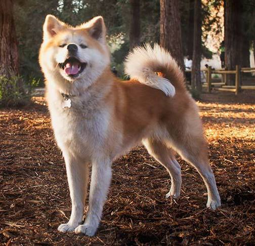

Акита-ину

Происхождение: Япония
Размер: Крупные (рост: 61–67 см, вес: 40–50 кг)
Характер: Спокойные, преданные, независимые, могут быть упрямыми
Особенности: Густая шерсть, требует регулярного ухода. Очень привязываются к хозяину, но могут быть агрессивны к другим собакам. Нуждаются в ранней социализации и твердой дрессировке
Здоровье: Склонны к дисплазии суставов, болезням глаз